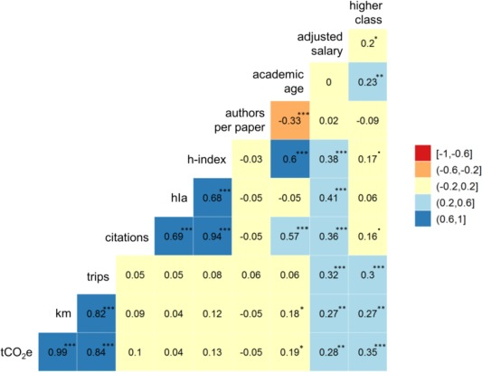
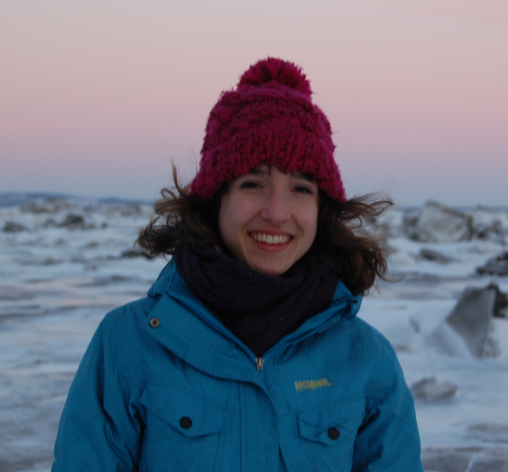

Academics, professors and graduate students, are strongly encouraged to travel for conferences, field work, and research stays. The carbon footprint of that travel is huge. With the ongoing climate crisis, should academics rather lead by example?
With the Responsible Research initiative, we wish to raise awareness of academics to the carbon and ethical footprint associated with their air travel. On this website, you will find information and tools to feed your reflection on this subject. We invite you to join the movement of academics reducing the impact of their travel!
Information
Air travel impact
Aviation represents 2% of global GHG emissions, but...
- It is the sector with the largest emissions growth
- 75% increase in number of flights between 1990 and 2012;
- 70% increase in emissions between 2006 and 2019;
- From 1.8 to 4.8 billion travelers in 2050, for 6 times the emissions.
- For an average academic, air travel represents close to 50% of his/her annual emissions!
Carbon budgets:
One transatlantic flight = 1.5 tCO2e
The effect of flying on global warming is 2-4 times higher than the warming due solely to GHGs, due to the formation of high altitude clouds. link
Work-related travel
Academic's travel in Canada:
- At McGill University, professors travel by plane on average three times per year. Professors and graduate students travel on average 13 000 km/year (Kramer and Manaugh, under review).
- At Université de Montréal, professors travel on average 33 000 km/year for a total of 7.5 tCO2, postdocs 13 600 km/year, and graduate studenbts 5900 km/year (Arsenault et al., Environ Res Lett, 2019).
- At UBC, professors travel on average 45 000 km/year, for a total of 7.5 tCO2 for full professors, 5.4 tCO2 for associate professors, and 2.4 tCO2 for graduate students.
60% of the trips are for conferences and 16% for field work.
According to a recent study (Whynes et al., J Clean Prod, 2019), there is however no correlation between academic success and travel, above one flight per year.

Whynes et al., J Clean Prod, 2019
Moreover, 5 to 10% of the trips are avoidable: round trips in one day or short distances.
There are no difference in travel emissions in departments studying environment-related disciplines and others (Whynes et al., 2019).
People with a job in environment fly less for their vacations, but as much as people in other sectors such as economy and medicine when it's for work (Balmford 2017).
Solutions
Carbon offsets
Buying carbon offsets or carbon credits is not a solution to air travel.
- Non-generalisable solution
- Some carbon offsets are unreliable
Alternatives
| Transport |
kg CO2e |
Units |
| Plane (economy class) |
0.5 |
per km-passenger |
| Car |
0.3 |
per km |
| Train (North Am.) |
0.09 |
per km-passenger |
| Bus |
0.04 |
prr km-passenger |
Source: Kalmus, Being the Change, 2017.
If you take the plane, reduce stopovers.
Links and references
Carbon footprint calculators
Some references
- Langin, K., 2019, Science, Why some climate scientists are saying no to flying link
- Arsenault, J. et al., 2019, Environ. Res. Lett., The environmental footprint of academic and student mobility in a large research-oriented university link
- Whynes, S. et al., 2019, J. Clean Prod., Academic air travel has a limited influence on professional success link
- Kramer, G. & Manaugh, K., 2017, Understanding the determinants and impacts of academic long-distance travel, 96th annual transportation research board meeting, Washington D.C.
- Le Devoir, Voyager en avion: oui ou non? Débat, Montréal 25 sept. 2019. link
- Peter Kalmus. Being the Change: Live Well and Spark a Climate Revolution, New Society Publishers, 2017.
- Klower, M., 2019, The travel carbon footprint of the AGU Fall Meeting 2019. link
Sign the pledge
See the list of signatories. To see the complete list, you must look at all the different tabs available at the bottom of the page.
Events
Presentation in your department
Our main tool to raise awareness is to do presentations in departments, in front of professors and graduate students. The presentation is of about 30 minutes, followed by a discussion with the public that is always very interesting. The goal of the presentation is to present data and studies on the question of air travel in academia.
We gave the presentation in a number of departments in Montreal-based universities.
We would be very happy to have to chance to present in your department, student association or research group! Contact us
Events
Upcoming events
Past events
- Geotop, UQAM, Jan. 22, 2020. 12:00, PK-7605.
- Physics department, Université de Montréal, Jan. 17, 2020.
- Loyola Sustainability Research Center, Concordia University, Jan. 10, 2020.
- CIRAIG, Polytechnique Montréal, Jan. 9, 2020.
- Anthropology department, Université de Montréal, Dec. 12, 2019.
- Geography department, Université de Montréal, Oct. 29, 2019.
- Earth and Planetary Sciences department, McGill University, Oct. 22, 2019.
- Atmospheric and Oceanic Sciences department, McGill University, Oct. 18, 2019.
Who are we
The Responsible Research initiative is born from my discomfort seeing academics traveling without guilt, in particular in climate science. This discomfort grew as I did research on the subject, as I realized flying accounts in fact for a very large fraction of our yearly emissions. I felt the need to find a positive way to raise awareness of scientists around me on this question.
Mathilde Jutras

After a bachelor degree in physics at Université de Montréal, I wanted to apply my knowledge to environment-related questions. I did a master's in climate science at McGill University on sea ice dynamics in the Arctic. To participate to the design of more tangible solutions, I stepped towards social sciences. I did research in environmental governance at École nationale d'administration publique in Montreal. In the end, my love of science and of nature brought me back to natural sciences, as I started in 2018 a PhD in physical and chemical oceanography at McGill University on the deoxygenation of the St. Lawrence.
During my searches on the impact of air travel in academia, I met Julien, who had done a study on that subject at Université de Montréal.
Julien Arsenault
I am a PhD candidate in geography at Université de Montréal where I also did my bachelor and my master's degree. I work on biogeochemical interactions between water, soil and vegetation in wetland. I am also interested in environmental footprint of universities and their institutions. In collaboration with a number of partners, I calculated the carbon and nitrogen footprint of McGill University and Université de Montréal, with the goal of finding solutions to redice our footprint.